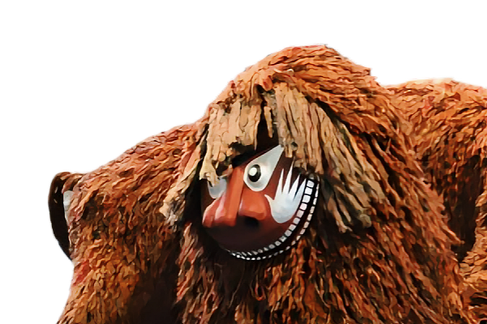
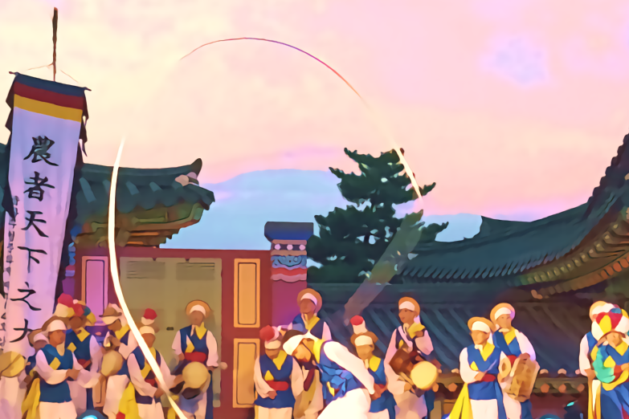

함경도 북청 사자놀음
함경남도 북청군에서 정월 대보름에 사자탈을 쓰고 놀던 민속놀이로, 잡귀를 쫓고 마을의 평안을 기원하는 행사입니다.
특징
- 삼국시대부터 이어진 오래된 전통입니다.
- 음력 1월 14일 밤부터 15일 새벽까지 이어집니다.
- 사자, 양반, 꺾쇠 등 다양한 인물이 등장하며 퉁소 연주가 특징적입니다.
황해도 봉산 탈춤
황해도 봉산군에서 유래한 탈춤으로, 오락성과 예술성이 뛰어나며 익살과 웃음으로 현실을 풍자합니다.
특징
- 화려한 의상과 굴곡이 심한 귀면형 탈이 특징입니다.
- 춤 동작이 크고 역동적입니다.
- 7개 과장으로 구성되며, 주로 단오와 하지에 행해졌습니다.
서울 종묘제례악
조선시대 왕과 왕비의 신위를 모신 종묘에서 제사를 지낼 때 연주하는 음악으로, 무용과 노래, 악기가 어우러집니다.
특징
- 세종 때 창작되어 세조 때 제사에 맞게 개편되었습니다.
- 보태평과 정대업을 중심으로 조상의 공덕을 찬양합니다.
- 매년 5월 첫째 일요일 종묘대제에서 연주됩니다.
안성 남사당놀이
남자들로 구성된 유랑광대극으로, 풍물놀이, 버나놀이, 살판(땅재주), 어름(줄타기), 덧뵈기(탈놀이), 덜미(인형극) 등 6마당으로 구성됩니다.
특징
- 꼭두쇠를 우두머리로 한 전문 유랑 예인 집단입니다.
- 여성 재주꾼 '바우덕이'가 유명합니다.
강릉 농악
강원도 영동지방을 중심으로 전승되는 마을굿 농악으로, 농경 생활의 모습을 담고 있습니다.
특징
- 달맞이굿, 횃불놀이, 놋다리밟기 등 다른 지역에 없는 놀이가 있습니다.
- 정월 대보름과 2월 좀상날에 한 해 농사를 점치며 행해졌습니다.
- 농사풀이 과정이 포함된 것이 큰 특징입니다.
안동 하회별신굿
안동 하회마을에서 마을의 평안을 기원하며 벌이던 탈놀이로, 양반을 풍자하고 서민의 억눌린 마음을 표현합니다.
특징
- '별나고 특별한 큰 굿'이라는 의미를 가집니다.
- 파계승에 대한 비웃음과 양반에 대한 신랄한 풍자가 특징입니다.
- 8마당으로 구성되어 있습니다.
진주 검무
진주에 전승되는 궁중무용으로, 우리나라에 남아있는 가장 오래된 검무입니다.
특징
- 신라시대에 발생한 것으로 추정됩니다.
- 조선시대 무사복을 입은 8명의 무용수가 춤을 춥니다(8검무).
- 숙은사위, 연풍대 등 독특한 춤사위가 있습니다.
전라도 강강술래
전라남도 해안지방에서 추석 달밤에 부녀자들이 손을 잡고 노래하며 추던 집단놀이입니다.
특징
- 임진왜란 때 이순신 장군의 의병술에서 유래했다는 설이 있습니다.
- 느린 가락에서 점차 빨라지며 역동적으로 변합니다.
- 남생이놀이, 기와밟기 등 다양한 놀이가 포함됩니다.
제주 칠머리당굿
제주에서 바다의 평온과 풍어를 기원하며 음력 2월에 시행하는 세시풍속입니다.
특징
- 바람의 여신(영등 할망), 용왕 등에게 제사를 지냅니다.
- 음력 2월 1일에 영등환영제, 14일에 영등송별제를 엽니다.
- 해녀와 어부들의 안전과 풍어를 기원하는 소중한 전통입니다.
임실 필봉농악
전북 임실 지역의 농악으로, 모두가 함께하는 마음을 담아 연주하는 농악입니다.
특징
- 다른 지역에 비해 잡색의 수가 많고 다양합니다.
- 함께 어우러지는 것을 중요하게 생각합니다.
- 가락이 힘차고 씩씩한 것이 특징입니다.
호남검무
[호남검무에 대한 설명을 이곳에 입력하세요.]
특징
- [특징 1을 이곳에 입력하세요.]
- [특징 2를 이곳에 입력하세요.]
- [특징 3을 이곳에 입력하세요.]
대구 날뫼북춤
[대구 날뫼북춤에 대한 설명을 이곳에 입력하세요.]
특징
- [특징 1을 이곳에 입력하세요.]
- [특징 2를 이곳에 입력하세요.]
- [특징 3을 이곳에 입력하세요.]